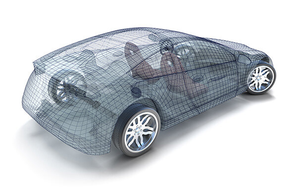

2Dデータから3D化
既存図面や2Dデータをもとに、3D-CADデータを製作します。
High-End 3D-CAD
ハイエンド3D-CADによる高精度な設計ソリューションを備え、 複雑な内部構造パーツからデザイン性の高い製品に至るまで、あらゆる分野の設計に対応しています。

2D To 3D
2Dデータから3Dデータを製作できます。3Dデータ製作のみのご依頼も可能です。 既存図面やデータ資産を有効に活用し、試作・加工・検討へつなげます。
既存図面や2Dデータをもとに、3D-CADデータを製作します。
モデリングデータ作成のみのご相談にも対応します。
過去の設計資産を活かし、次の試作・加工に使いやすい形へ整理します。
Formats
STEP、IGES、パラソリッド、Rhinoなど、その他主要3Dデータ形式を含めた あらゆるデータフォーマットに対応します。 データ製作には打ち合わせが必要です。お気軽にお問い合わせください。
Computer System
Contact
土日も営業。価格、納期ご相談ください。